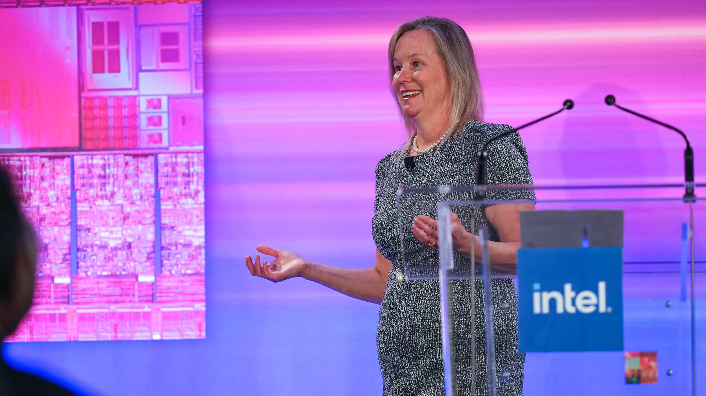
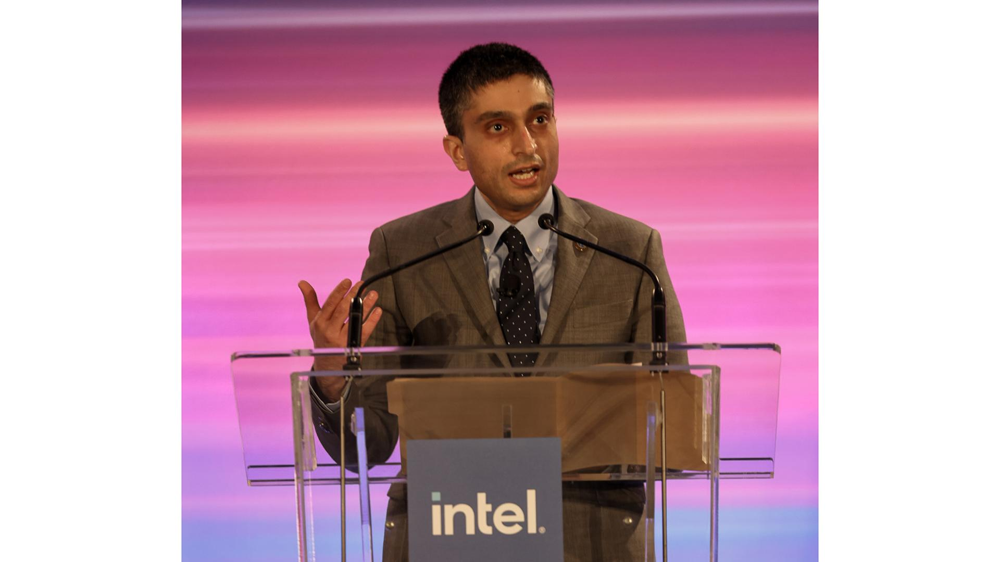
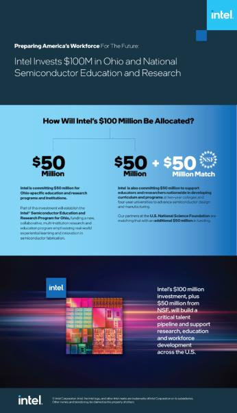

Pia Wilson-Body, president of the Intel Foundation, speaks Thursday, March 17, 2022, at an event where Intel unveiled plans to invest in Ohio and national education and research initiatives to address technical challenges and workforce shortages in semiconductor manufacturing. The announcement was part of Intel’s recent investment of more than $20 billion to construct two leading-edge chip factories in Ohio. (Credit: Columbus State Community College)
Pia Wilson-Body, president of the Intel Foundation, speaks Thursday, March 17, 2022, at an event where Intel unveiled plans to invest in Ohio and national education and research initiatives to address technical challenges and workforce shortages in semiconductor manufacturing. The announcement was part of Intel’s recent investment of more than $20 billion to construct two leading-edge chip factories in Ohio. (Credit: Columbus State Community College)

Christy Pambianchi, Intel chief people officer, speaks Thursday, March 17, 2022, at an event where Intel unveiled plans to invest in Ohio and national education and research initiatives to address technical challenges and workforce shortages in semiconductor manufacturing. The announcement was part of Intel’s recent investment of more than $20 billion to construct two leading-edge chip factories in Ohio. (Credit: Columbus State Community College)
Christy Pambianchi, Intel chief people officer, speaks Thursday, March 17, 2022, at an event where Intel unveiled plans to invest in Ohio and national education and research initiatives to address technical challenges and workforce shortages in semiconductor manufacturing. The announcement was part of Intel’s recent investment of more than $20 billion to construct two leading-edge chip factories in Ohio. (Credit: Columbus State Community College)
Keyvan Esfarjani, Intel chief global operations officer, speaks Thursday, March 17, 2022, at an event where Intel unveiled plans to invest in Ohio and national education and research initiatives to address technical challenges and workforce shortages in semiconductor manufacturing. The announcement was part of Intel’s recent investment of more than $20 billion to construct two leading-edge chip factories in Ohio. (Credit: Columbus State Community College)
Keyvan Esfarjani, Intel chief global operations officer, speaks Thursday, March 17, 2022, at an event where Intel unveiled plans to invest in Ohio and national education and research initiatives to address technical challenges and workforce shortages in semiconductor manufacturing. The announcement was part of Intel’s recent investment of more than $20 billion to construct two leading-edge chip factories in Ohio. (Credit: Columbus State Community College)

Dr. Erwin Gianchandani of the National Science Foundation speaks Thursday, March 17, 2022, at an event where Intel unveiled plans to invest in Ohio and national education and research initiatives to address technical challenges and workforce shortages in semiconductor manufacturing. The announcement was part of Intel’s recent investment of more than $20 billion to construct two leading-edge chip factories in Ohio. (Credit: Columbus State Community College)
Dr. Erwin Gianchandani of the National Science Foundation speaks Thursday, March 17, 2022, at an event where Intel unveiled plans to invest in Ohio and national education and research initiatives to address technical challenges and workforce shortages in semiconductor manufacturing. The announcement was part of Intel’s recent investment of more than $20 billion to construct two leading-edge chip factories in Ohio. (Credit: Columbus State Community College)
Ohio Gov. Mike DeWine speaks Thursday, March 17, 2022, at an event where Intel unveiled plans to invest in Ohio and national education and research initiatives to address technical challenges and workforce shortages in semiconductor manufacturing. The announcement was part of Intel’s recent investment of more than $20 billion to construct two leading-edge chip factories in Ohio. (Credit: Columbus State Community College)
Ohio Gov. Mike DeWine speaks Thursday, March 17, 2022, at an event where Intel unveiled plans to invest in Ohio and national education and research initiatives to address technical challenges and workforce shortages in semiconductor manufacturing. The announcement was part of Intel’s recent investment of more than $20 billion to construct two leading-edge chip factories in Ohio. (Credit: Columbus State Community College)
David Harrison, president of Columbus State Community College in Ohio, speaks Thursday, March 17, 2022, at an event where Intel unveiled plans to invest in Ohio and national education and research initiatives to address technical challenges and workforce shortages in semiconductor manufacturing. The announcement was part of Intel’s recent investment of more than $20 billion to construct two leading-edge chip factories in Ohio. (Credit: Columbus State Community College)
David Harrison, president of Columbus State Community College in Ohio, speaks Thursday, March 17, 2022, at an event where Intel unveiled plans to invest in Ohio and national education and research initiatives to address technical challenges and workforce shortages in semiconductor manufacturing. The announcement was part of Intel’s recent investment of more than $20 billion to construct two leading-edge chip factories in Ohio. (Credit: Columbus State Community College)
Download all images (ZIP, 35 MB)
What’s New: To address immediate semiconductor manufacturing technical challenges and workforce shortages, Intel today announced details of a $100 million investment over the next decade to establish semiconductor manufacturing education and research collaborations with universities, community colleges and technical educators across the U.S. Intel will invest $50 million directly in Ohio higher education institutions. An additional $50 million from Intel will be matched by $50 million from the U.S. National Science Foundation in national funding opportunities. Intel’s education financing is part of the company’s recent announcement that it would invest more than $20 billion to construct two new leading-edge chip factories in Ohio.
“At Intel, we strongly believe that investing in education is necessary to ensure we have the right talent to support our growth and help the U.S. regain leadership in semiconductor manufacturing. Our goal is to bring these programs and opportunities to a variety of two-year and four-year colleges, universities and technical programs, because it is critical that we expand and diversify STEM education. Intel is committed to preparing America’s workforce with the technology skills needed now and into the future.”
–Christy Pambianchi, Intel executive vice president and chief people officer
Why It’s Important: Amid a national skills shortage in tech, the investment will give a major boost to education and workforce development in the U.S. Through this investment, Intel will establish comprehensive and collaborative programs with higher education institutions to accelerate readiness and enable the workforce needed for operations of its new semiconductor fabrication facilities and of ecosystem partners. The investments will provide resources for creating new curriculums for associate and undergraduate degrees, certifications, faculty training, reskill and upskill programs for the existing workforce, laboratory equipment upgrades, and research supporting semiconductor fabrication innovation.
“In the past year, Intel has announced manufacturing investments that will create 6,700 high-tech, U.S. jobs, including 3,000 in Ohio. Intel is on a mission to lead domestic chip capacity and capability growth, and for this, we need the very best talent available,” said Keyvan Esfarjani, Intel executive vice president and chief global operations officer. “That is why Intel is investing in educational and research programs in Ohio and across the U.S. to address the technical challenges and workforce shortages in our industry.”
What Intel’s Ohio Investment Does: Intel intends to fund $50 million in grants in Ohio over the next 10 years. Part of this investment will establish the Intel® Semiconductor Education and Research Program for Ohio to fund a collaborative, multi-institution research and education program that will emphasize gaining real-world experience and innovating in semiconductor fabrication. Intel will accept proposals from Ohio-based academic researchers, technical centers, faculty and educators to address curriculum development, faculty training, laboratory equipment upgrades, novel research to advance semiconductor fabrication and student opportunities including internships.
What the U.S. National Science Foundation Does: Intel will partner with NSF on a national funding initiative. NSF will match Intel’s $50 million investment, making $100 million available in funding opportunities. NSF will release a solicitation for proposals from researchers and educators across the nation to develop curriculum improving STEM education at two-year colleges and four-year universities, inclusive of minority-serving institutions, and novel research to advance semiconductor design and manufacturing.
Through NSF’s and Intel’s shared interests in supporting open, pre-competitive research and education advances in semiconductor design and manufacturing, the partnership will provide at least $5 million in grants per year for 10 years to award recipients. The funding opportunities will enable collaborations between researchers and educators to provide insights on fostering the relationship between academic research and early higher education, laying the groundwork for implementing technology solutions, and growing the future semiconductor workforce.
More Context: This is one of many educational initiatives from Intel. This month, Intel announced the new semiconductor manufacturing Quick Start program with Maricopa Community Colleges in Arizona. Quick Start is an accelerated two-week program that prepares students for a rewarding career as a semiconductor technician with hands-on learning from industry-experienced Intel employees as instructors.
The first two Intel factories in Ohio are expected to create 3,000 high-tech jobs and 7,000 construction jobs, and to support tens of thousands of additional long-term jobs across a broad ecosystem of suppliers and partners. Intel’s investment in partnerships with educational institutions and NSF is one piece of the company’s efforts to build a skilled pipeline of talent and bolster research programs in the region and throughout the U.S.
Even More Context: Intel Launches Education Initiatives (Event Replay)

×

Download full infographic
Tags
Corporate, Manufacturing